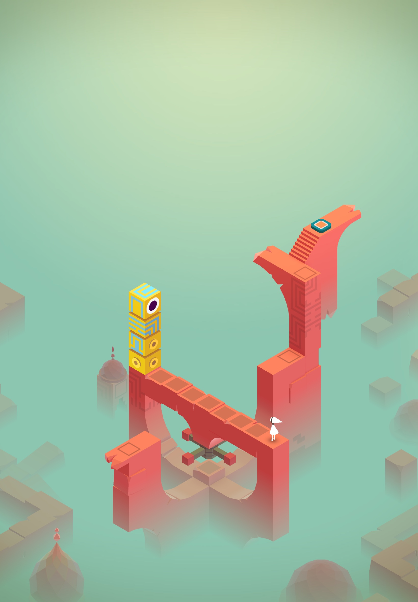
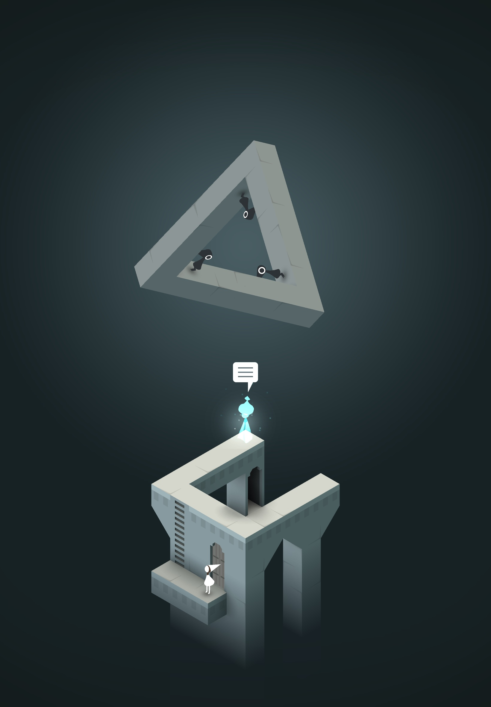
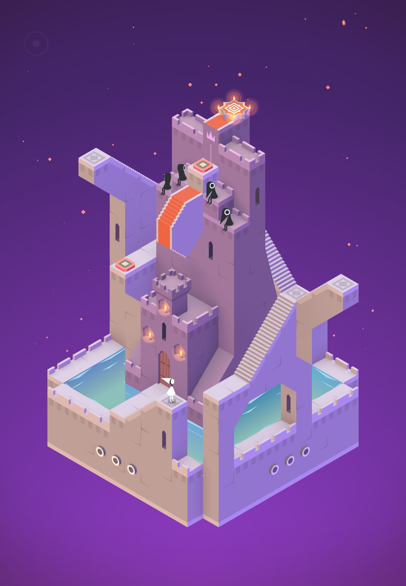
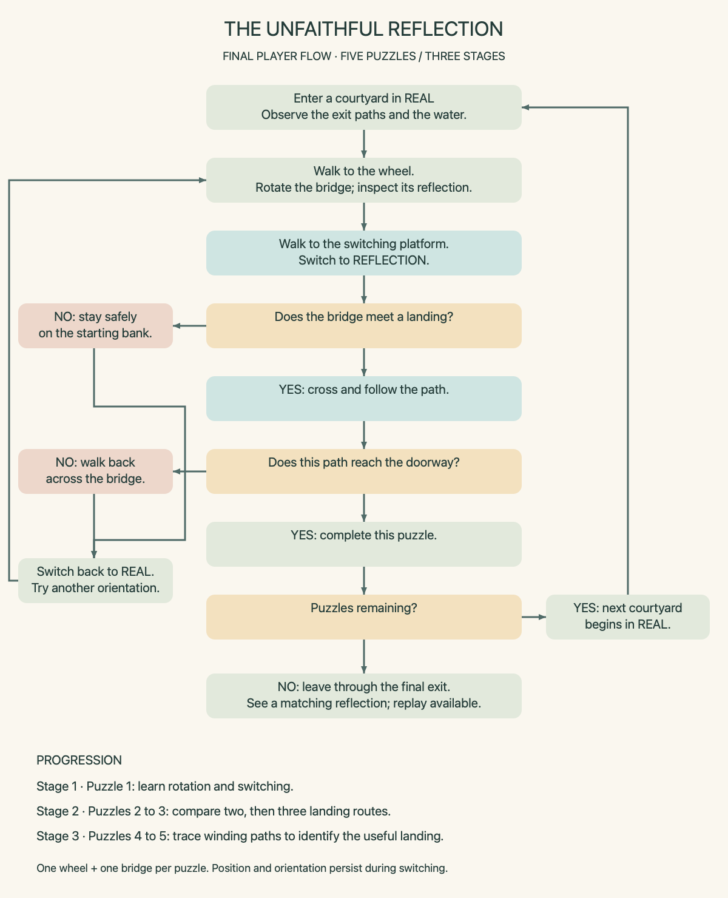
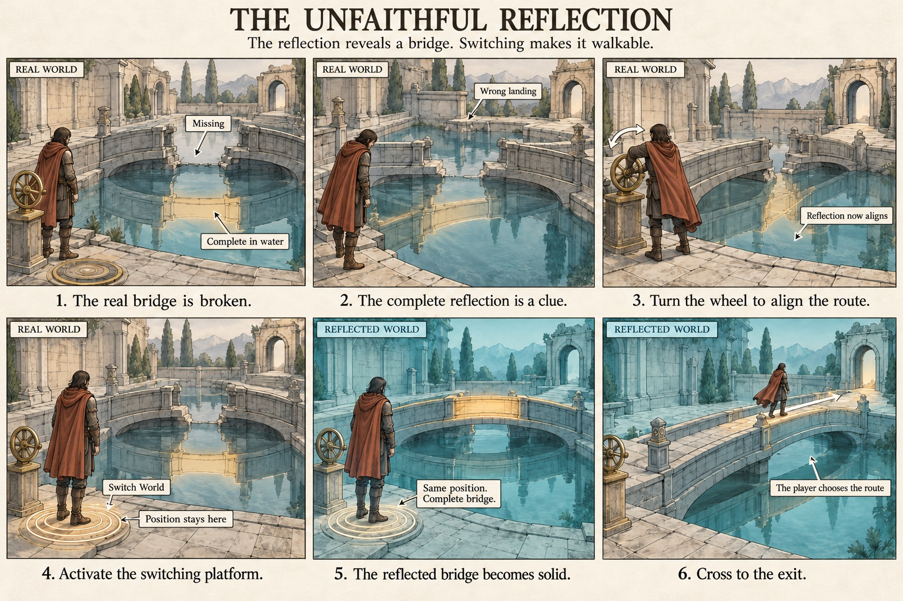
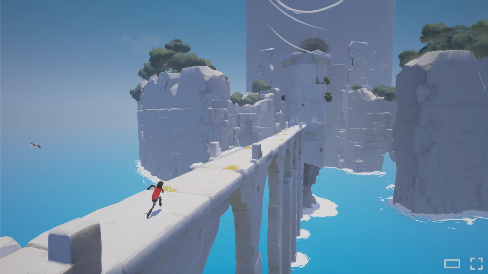
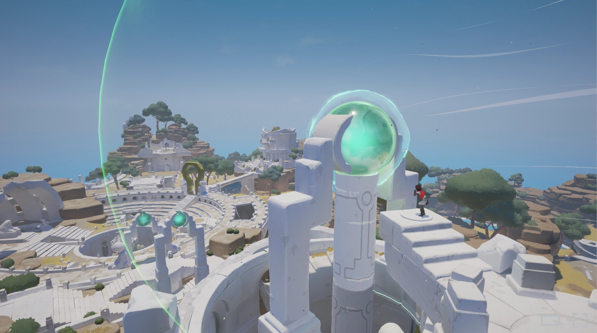
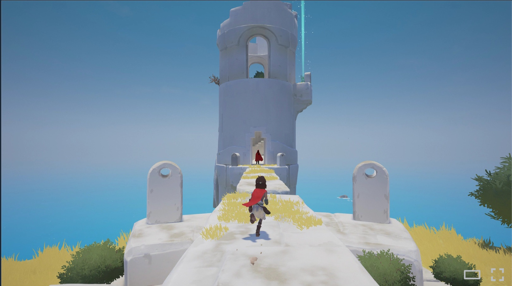

The concept
The Unfaithful Reflection is an atmospheric web puzzle game in which a lone traveler searches for an exit from a mysterious courtyard. Bridges that appear broken in the real world are complete in their reflections but they do not always lead in the right direction.
Players turn a wheel to rotate a bridge, examine its reflection, and identify which landing connects to the exit path. Once the bridge is correctly aligned, they switch into the reflected world and cross.
Five short puzzles introduce increasingly complex route choices while keeping the same simple actions: walking, rotating, and switching. The intended experience combines quiet exploration, visual discovery, and the satisfaction of solving a spatial puzzle.
Case study: Monument Valley
I have played Monument Valley and was really awestruck by the visual design and sound design of the game. This class has been a great opportunity to research and see more about The Monument Valley game.
Monument Valley is an architectural puzzle game developed by ustwo games. Players guide Ida through environments shaped by optical illusions and hidden pathways. I selected it to study how architecture, visual clues, and environmental manipulation can create puzzles with simple controls.
Official Monument Valley game page ↗
Notable creators for the game - Ken Wong - Designer and Artist, David Fernández Huerta - Artist and Animator, and Peter Pashley - Lead Developer and Level Designer.
Meaningful Moment 1: A puzzle element becomes a character
The yellow Totem stands out from the surrounding architecture through its colour and single eye. Its appearance gives an architectural object a sense of personality. This moment provides a useful example of how visual design can encourage players to interpret an object as a companion rather than simply part of a structure.
For my game, this suggests that the traveler’s silhouette and movement should communicate personality even with little dialogue.

Meaningful Moment 2: Space becomes difficult to trust
The floating triangular structure challenges ordinary expectations of how surfaces connect. The Crow People positioned on different sides make orientation feel uncertain. This scene connects to my interpretation of Hallucination: an image can appear convincing while contradicting familiar physical rules.
My game develops this idea through a broken bridge whose reflection appears complete.

Meaningful Moment 3: The environment suggests interaction
Marked tiles, circular architectural details, stairs, and doors make the environment worth examining closely. These elements provide a starting point for understanding how the player might interact with the scene.
For my game, I will distinguish the wheel from the switching platform through their shapes and functions. The wheel changes bridge orientation, while the circular floor platform allows the player to change worlds.

Five Player Action Events
- Moving Ida - I tapped at a specific reachable point in the walkway and Ida moved to that point, this allowed me to explore the structure and see the blocked routes.
- Interacting with the Totem: I dragged the Totem into a different position beside the walkway. Its movement changed the available crossing and I figured out that Ida could reach a specific point by using Totem, this helped me understand how a movable character could become part of the route.
- Activating a marked tile: I guided Ida onto a marked floor tile. This triggered a change in the surrounding architecture, showing me that moving the character could also alter the environment.
- Manipulating architecture: I rotated an architectural control to reposition a section of the structure. When the pathways aligned, Ida could continue across a connection that had previously been unavailable.
- Responding to a Crow Person: I encountered a Crow Person obstructing the walkway and explored another route. This encouraged me to observe the character’s position and reconsider how Ida could move through the puzzle.
Design takeaway
This case study helped me focus on the relationship between observation, action, and visible feedback. In The Unfaithful Reflection, players will inspect the water, rotate a bridge, and test the resulting route. The aim is to make the solution understandable through the environment while leaving the player to discover the correct alignment.
Sources and image credits
Screenshot credit: Monument Valley, ustwo games. Gameplay screenshots captured by Anwesha Das.
Critical discussion with AI
Research and verification
I used ChatGPT to help analyse my reference game and develop my concept. The official ustwo game page and team credits provided sources for checking the game description and creator roles. I treated the connection between Monument Valley and Hallucination as my own interpretation rather than a confirmed statement of the creators’ intentions.
Gap 1: The switching mechanic was unclear
The initial explanation did not clearly establish whether switching moved the traveler, flipped the scene, or happened automatically after crossing. I questioned these details because I could not clearly imagine the player’s experience. Through the discussion, the rules became more specific: switching happens on a marked platform, preserves the traveler’s position, and presents the reflected world upright.
Gap 2: The original idea lacked a meaningful challenge
The early concept relied on switching worlds whenever a path was blocked. I questioned what the player actually needed to solve. This led to adding bridge rotation, so players must identify the correct landing and align the bridge before switching to cross it.
A later version introduced additional wheels and became difficult to understand. I asked for a simpler design, leading to one wheel and one bridge per puzzle, with difficulty increasing through route choices.
Selected exchange
Me: “But what is the challenge?”
ChatGPT: “You’re right—the version I described is too easy.”
Me, after further development: “Too complicated to understand.”
ChatGPT: “I added too many steps. Let’s simplify the game before finishing the proposal.”
My conclusion and design decision
This discussion helped me distinguish an attractive visual concept from a playable puzzle. I decided to retain three clear actions: walking, rotating, and switching. Each puzzle uses one wheel and one bridge, while later puzzles introduce more demanding route choices. My aim is to make the rules easy to understand while allowing the player to discover the solution.
Narrative and interpretation
A traveler enters an unfamiliar courtyard at dusk. The entrance closes behind them, leaving a distant doorway as the apparent way out. A broken bridge blocks their progress, yet its reflection in the water appears complete.
The traveler discovers that a wheel changes the bridge’s direction in both worlds. A glowing circular platform allows them to enter the reflected courtyard, where the complete bridge becomes walkable.
As the traveler moves through successive courtyards, the possible routes become harder to interpret. Some landings lead to dead ends; others connect to winding paths. Progress requires observing the whole route rather than choosing the closest destination.
The game interprets Hallucination through a fictional environment in which sight and physical reality disagree. The reflection is visually unfaithful to the world above it, but its differences provide useful clues. Beyond the final exit, a still pool accurately reflects the surroundings, bringing the journey to a quiet close.
Player role and objective
The player guides the traveler through five courtyard puzzles to reach the final exit. In each puzzle, the objective is to identify the correct landing, align the bridge with it, and cross through the reflected world.
The challenge is understanding how the bridge connects to the surrounding paths. Switching alone does not solve the puzzle.
Player controls
| Control | Result |
|---|---|
| Click or tap a reachable location | The traveler walks along the available path. |
| Click or tap the wheel while standing beside it in the real world | The bridge rotates to its next fixed orientation. Its reflection changes with it. |
| Select “Switch World” while standing on the circular platform | The courtyard changes between real and reflected versions. The traveler stays in the same position. |
| Click a blocked destination | The traveler remains safe, and a subtle visual cue indicates that the route is unavailable. |
| Select “Restart Puzzle” | The current puzzle returns to its starting arrangement. |
| Select the sound toggle | Audio is muted or restored. |
Rules of the game
- Each puzzle contains one wheel and one rotating bridge.
- The wheel operates only in the real world.
- The bridge has three fixed orientations. The chosen orientation remains unchanged when switching worlds.
- The bridge is broken in the real world and complete in the reflected world.
- A complete bridge must connect to a valid landing before the traveler can cross.
- Switching is possible only on a marked platform that exists in both worlds.
- Both worlds appear upright. A ripple and gentle fade communicate the change.
- Crossing a bridge does not automatically switch worlds.
- Incorrect routes are recoverable. The traveler can walk back, switch to the real world, and adjust the bridge.
- There are no enemies, timers, or death penalties.
- Entering the next courtyard begins a new puzzle in the real world.
Five puzzles. Three stages.
Opening
The traveler enters the courtyard and notices a distant exit. Approaching the broken bridge reveals a contradiction: the water shows a complete crossing. The nearby wheel and circular platform introduce the two interactions needed to use it.
Stage 1: Learn the rule
Puzzle 1: The First Crossing
One clearly visible path leads toward the destination. A brief prompt introduces the wheel, allowing the player to rotate the bridge while observing its reflection. The player then switches worlds and crosses the aligned bridge.
This puzzle teaches the relationship between observation, rotation, switching, and movement.
Stage 2: Observe the choices
Puzzle 2: Two Landings
Two landing points appear possible, but only one connects to the next doorway. The player examines the paths before choosing a bridge orientation.
Puzzle 3: The Misleading Route
Three landing points offer different routes. The closest landing leads to a short dead end, encouraging the player to look beyond distance and inspect where each path actually goes.
Both puzzles use the same controls introduced in Stage 1.
Stage 3: Plan the route
Puzzle 4: Around the Corner
The doorway sits beyond a bend. The player must trace the visible fixed paths from their landing points to determine which one reaches it.
Puzzle 5: The Final Courtyard
Several winding paths make the solution less immediately obvious. The player identifies the continuous route to the final doorway, rotates the single bridge toward its starting point, switches worlds, and crosses.
All essential connections remain visible. The challenge comes from observation and spatial reasoning, rather than hidden information or random changes.
Ending
The traveler passes through the final doorway and reaches a quiet pool. Its reflection matches the world above it. The scene pauses briefly before offering the option to replay.
Visual and sound direction
The traveler will walk at a measured pace. Bridge rotation will be smooth but brief, stopping clearly at each orientation. World switching will retain the camera position and use a gentle ripple or fade.
Quiet water ambience, footsteps, wheel sounds, and a soft switching tone will support the experience. Important feedback will also be visible, so sound is optional. Final audio sources and credits will be documented when assets are selected.
Two week build scope
Week 2: Build the playable prototype
During Week 2, I will build the core interactions: moving the traveler, rotating a bridge with a wheel, and switching between the real and reflected worlds. I will first complete one playable puzzle to check that the bridge’s orientation remains consistent when switching and that incorrect choices allow safe backtracking. I will then reuse this structure to create five puzzles across three stages, gradually introducing more landing choices and winding paths. By the end of the week, the prototype will include an opening, basic instructions, puzzle progression, a restart control, and an ending.
Week 3: Test, refine, and publish
During Week 3, I will test the prototype with three to five players and observe whether they understand the controls, recognise the relationship between the worlds, and choose routes intentionally. I will use their feedback to improve unclear clues, puzzle difficulty, and pacing. I will also refine the visual style, add subtle sound and transitions, and check desktop and mobile usability. Finally, I will publish the game, verify that visitors can access and complete it, and update my class portfolio webpage with the playable link and a short reflection on the development process.
Flowchart

Storyboard

Visual and music references
I am also drawing inspiration from the following to develop visual design for my game The unfaithful Reflection -



And for music I am inclined to using a mix of the following as a subtle background music along with some interesting sfx-